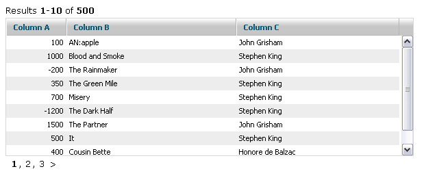
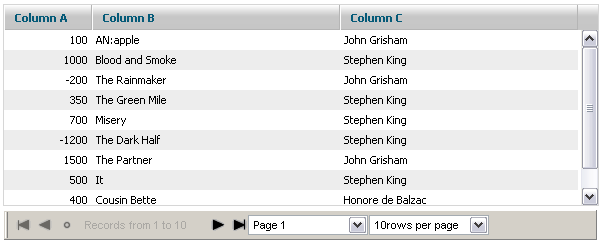
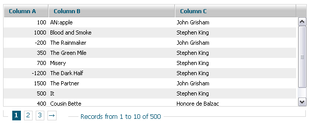
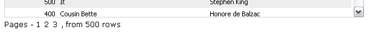
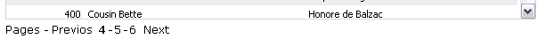
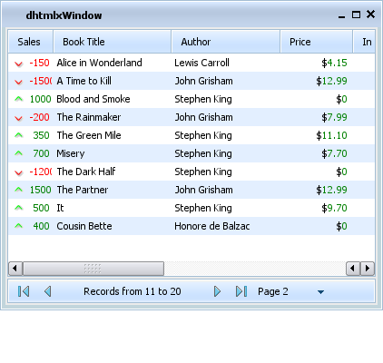

Paging in grid
dhtmlxgrid_pgn.js required ( this functionality is available only in dhtmlxGrid PRO )
To turn paging on is the following:
grid.enablePaging(mode,pageSize,pagesInGrp,pagingControlsContainer,showRecInfo,pagingStateContainer);
The parameters the user should specify are the following:
- mode(true|false) - enable|disable paging mode;
- pageSize - set count of rows per page;
- pagesInGrp - set count of visible page selectors;
- pagingControlsContainer - id or container that will be used for showing paging controls;
- showRecInfo(true|false) - enable|disable showing of additional information about paging state;
- pagingStateContainer - id or container that will be used for showing paging state.
Changing Page
There is the possibility to change the current pare in the grid from script. This can be executed in one of the following ways:
- Change Page
grid.changePage(pageNum); // new active page
- Change Page Relatively
grid.changePageRelative(ind); // correction ( -1,1,2, etc) to the current active page
Available Paging Skins
The possibility to apply predefined skins on paging was created. The user can choose between:
- default - the skin has configurable text line, requires two areas:

- toolbar - uses dhtmlxToolbar for navigation, requires a single area:

 - new screen required
- new screen required
- bricks - uses a slick, web-like navigation, requires a single area:

Applying Paging Skin
The following method should be used for applying a paging skin (should be used after paging was enabled and after setSkin(), if it is used in the grid):
grid.setPagingSkin("bricks");
To use “bricks” paging skin the user have to include dhtmlxgrid_pgn_bricks.css file.
Customizing Default Paging Skin
The default skin creates two information lines, one of which provides the information about the current state of paging. The second one provides navigation controls. Both lines can be configured through templates:
grid.setPagingTemplates(navigation_template,info_template);
The default templates are:
- navigation_template:
[prevpages:<: ] [currentpages:, ] [nextpages:>: ]
- info_template:
Results <b>[from]-[to]</b> of <b>[total]</b>
The following values are automatically replaced:
- [from] - index of the first row on the page;
- [to] - index of the last row on the page;
- [total] - total count of rows in the grid;
- [current] - link to the current page (or next | prev - the relative position can be used);
- [prepages] - link to the previous set of pages;
- [nextpages] - link to the next set of pages;
- [currentpages] - render the current set of pages.
All link markers allow to define the text as
[prev:text_in_normal_state:text_in_disabled_state]
The user can use any combination of markers and static text|HTML inside a template:
grid.setPagingTemplates("Pages - [current:0] [current:+1] [current:+2] , from [total] rows","");

grid.setPagingTemplates("Pages - [prevpages:Previos:] [currentpages:-] [nextpages:Next:]","");

Customizing Toolbar Paging Skin
The toolbar skin is based on dhtmlxToolbar. The user can get reference to the toolbar object in the following way:
grid.load(url,function(){ var myToolbar=grid.aToolBar; });
Note, aToolBar property is available only after all rows are loaded.
There is the possibility to use any of dhtmlxToolbar related methods to change the toolbar object.
In addition to that, the user can also configure which buttons (among the default ones) he expects to see in the toolbar:
grid.setPagingWTMode(navButtons,navLabel,pageSelect,perPageSelect);
Each of the above mentioned parameters can be true or false:
- navButtons - the first, prev, next, last buttons;
- navLabel - label with information about currently shown pages;
- pageSelect - selectbox that allows to choose the current page;
- perPageSelect - selectbox that allows to choose the count of rows per page.
The user can change style of the “tooblar” paging skin using 2nd parameter of setPagingSkin() method:
grid.setPagingSkin("toolbar","dhx_black");
To apply toolbar skin the user should include appropriate .css file from the folder dhtmlxToolbar\codebase\skins\
Customizing Bricks Paging Skin
The bricks skin requires an additional CSS file to be included into the project - dhtmlxgrid_pgn_bricks.css. This file defines the look and feel of controls. The user can adjust the necessary class in it in order to change their look and feel:
- .dhx_pbox - a border line around navigation controls;
- .dhx_pline - an area with page buttons;
- .dhx_page - a navigation button;
- .dhx_pager_info - an area with information about the current position inside paging;
- .dhx_page_active - an active page button.
The file also contains different styles for different grid skins:
- .dhx_pbox - default skin;
- .dhx_pbox_modern - modern skin;
- .dhx_pbox_light - light skin;
- etc.
Internationalization in Paging Skins
All text labels used in toolbar and bricks skins are stored in a separate structure. So, it is not a problem to support different languages.
grid.i18n.paging={ results:"Results", records:"Records from ", to:" to ", page:"Page ", perpage:"rows per page", first:"To first Page", previous:"Previous Page", found:"Found records", next:"Next Page", last:"To last Page", of:" of ", notfound:"No Records Found" }
Creating Custom Paging Skin
If none of built-in skins suits user needs, a custom one can be easily created. Basically, some custom code can be attached to events of the grid, but paging provides more simple way to define custom skins. Just define a grid method with the name:
grid._pgn_[NAME]
And call the following method:
grid.setSkin("[NAME]");
As a result, this new grid method will be called each time when some paging information is changed and needs to be updated.
For example, creating a group of paging controls like this:
<input type="button" value="Previos"> <span>Current page: NN</span> <input type="button" value="Next">
This can be done in the following way:
grid._pgn_custom=function(page,start,end){ /* page - the current page start - the first visible row last - the last visible row */ var html='<input type="button" value="Previos"><span>Current page: '+page+'</span><input type="button" value="Next">'; grid._pgn_parentObj.innerHTML=html; grid._pgn_parentObj.childNodes[0].onclick=function() { // the previous button logic grid.changePageRelative(-1); } grid._pgn_parentObj.childNodes[2].onclick=function() { // the next button logic grid.changePageRelative(1); } } grid.setPagingSkin("custom");
Attaching Grid with Paging to other components
If you need to attach grid with paging to other DHTMLX components (dhtmlxAccordion, dhtmlxLayout, dhtmlxTabbar or dhtmlxWindows) you should use appropriate API method to attach container with grid and paging area.
Container with grid and paging area:
<table width="500px" id="paging_container"> <tr> <td id="recinfoArea"></td> </tr> <tr> <td> <div id="gridbox" style="widht:100%; height:150px; background-color:white;overflow:hidden"></div> </td> </tr> <tr> <td id="pagingArea"></td> </tr> </table>
dhtmlxAccordion:
dhxAccordion.cells("a").attachObject("paging_container");
dhtmlxLayout:
dhxLayout.cells("a").attachObject("paging_container");
dhtmlxTabbar:
tabbar.setContent("a1","paging_container");
dhtmlxWindows:
dhxWins.window(id).attachObject("paging_container");
Attaching toolbar to status
If you're using grid, attached to window, layout or accordion, you may put toolbar into status.
First you should include custom css (required for proper toolbar rendering):
<!-- for accordion --> <link rel="STYLESHEET" type="text/css" href="status_toolbar_accordion.css"> <!-- for layout --> <link rel="STYLESHEET" type="text/css" href="status_toolbar_layout.css"> <!-- for window --> <link rel="STYLESHEET" type="text/css" href="status_toolbar_window.css">
Then you may init grid and paging:
// init layout var dhxLayout = new dhtmlXLayoutObject(...); // prepare status bar var sb = dhxLayout.cells("a").attachStatusBar(); sb.setText("<div id='recinfoArea'></div>"); // init grid var dhxGrid = dhxLayout.cells("a").attachGrid(); // configure paging dhxGrid.enablePaging(true, 10, 3, "recinfoArea"); dhxGrid.setPagingSkin("toolbar", "dhx_skyblue") ...
Screenshot:
